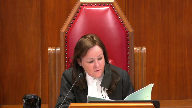
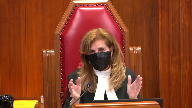
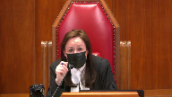
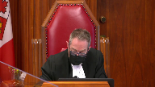
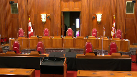
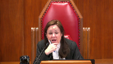
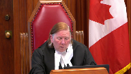
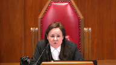

H.M.B. Holdings Limited v. Attorney General of Antigua and Barbuda
This transcript was made with automated artificial intelligence models and its accuracy has not been verified. Review the original webcast here.
Justice Wagner (00:00:17): Good morning.
In the case of HMB Holdings Limited against Attorney General of Antigua and Barbuda, for the appellant HMB Holdings Limited, Lincoln Kaler, Nina Butts, for the respondent Attorney General of Antigua and Barbuda, Stivel J. Taney and Sanjay Sood.
Lincoln Kaler.
Speaker 1 (00:00:55): Thank you, Mr. Chief Justice, and good morning to the bench.
My client has litigated against Antigua all the way to the highest court, Antigua’s highest court, the Privy Council, twice.
We’re now in Canada’s highest court, and my client is seeking to be paid a full and final judgment granted by the Privy Council originally in 2014, recognized in British Columbia, and we’re now seeking to have it registered in Ontario.
If we go back to the Privy Council decision, and Her Majesty directed the government of Antigua and Barbuda to ensure that that judgment from the Privy Council sitting as the highest appeal court for Antigua, the government of Antigua was to ensure that it is punctually observed and obeyed, and the Privy Council stated that in its closing comments, which is at tab two of our condensed book, Antigua has ignored Her Majesty’s direction since 2014, and my client is still owed money arising from that judgment.
There is no issue on the merits of the Privy Council judgment, the fairness, the process that it went through, and there is no issue in my submission that arising from that Privy Council judgment is the judgment we have at tab three of our condensed book, which is a full and final monetary judgment from British Columbia.
Justice Côté (00:02:48): Sir, I just have a question of clarification.

In its factum, Antigua is saying at paragraph 19 that there’s still an issue before the Caribbean appellate courts regarding how to allocate the principal and the interest.
Can you elaborate on that?
Is it something which is relevant or not here?
Speaker 1 (00:03:16): Thank you Madam Justice.
No, it’s not relevant to the appeal here and the reason I say so is that to the extent the quantum is at all an issue.
First of all, if it was a legitimate complaint, I say that the government of Antigua ought to have paid everything except what they dispute, which they have not done.
So, the interest amount at issue is less than the outstanding.
Overlapping speakers (00:03:43): I’m ending him out.
Speaker 1 (00:03:43): out on the judgment, number one.
And number two, that goes to enforcement, which is a theme that I’ll pick up through my submissions.
So enforcement is different than recognition.
And it may be that in the enforcement stage, issues around any quantum, i.e. any recoveries or interest, those types of things, that’s when that’s to be taken into account, not at the recognition stage.
So I say it, you know, we’ve got the final judgment and a government that has not and refused to pay.
And what are we to do in my submission here is determine whether Canada can be looked to by foreign parties as a country facilitating judgment enforcement.
And I use the word facilitation, which is what this court has used in Chevron.
And so the issue here is facilitating debt collection between provinces in our federation, and in particular with respect to this legislation, 11 provinces have the similar legislation.
And what I’m asking the court to consider correcting in this appeal is the high bar that I say improperly has been imposed by the Ontario Court of Appeal in affirming the application judge in this case, setting a high bar between provinces for the registration of foreign judgments.
And I say foreign judgments, and that in the legislation applies to the British Columbia judgment.
So it’s this high bar between provinces that I’m asking the court to consider, and it’s this high bar that I say it has to be corrected.
If Canada is to be considered a country.
Justice Rowe (00:05:41): But the way you’re putting this is this is something which is almost within federal jurisdiction, and you have a detraction from the obligations or the mechanisms of a federal nature, national nature, by a province.
This is done province by province.
And what the Ontario Court of Appeal is doing is interpreting a statute of the province of Ontario.
Am I being confused in my understanding of this?
Speaker 1 (00:06:16): Thank you, Justice.

I agree with you that the statute is being interpreted, both by the application judge and the Court of Appeal.
My submission is that this similar wording is used in that statute across the country.
This court has directed in my submission that with respect to dealing with recognition and enforcement, which is what that definition deals with and the barrier I’ve talked about, recognition and enforcement is something that should be considered at a lower bar, a different test, and I say that’s the Chevron test, which, yes, it’s provincial legislation, but this court has directed in my submission the level or how to apply and interpret legislation across the country, and it should be consistent with Chevron.
And I say the error here is what the Court of Appeal did and the application judges, when they looked to the interpretation of this statute, they looked to Van Brita, a high bar relevant in my submission only to jurisdiction simpliciter.
So I take your point, Mr. Justice, that it is provincial legislation we’re interpreting.
My submission is it should be interpreted consistently with Chevron and Van Brita, and it’s all about the context to which the statute is being put, and that’s why there can be two tests, Van Brita versus Chevron, when interpreting the statute.
And so when I look at the judgment that was obtained in British Columbia, and I emphasize that it’s a final monetary judgment, the judgment at tab three, it’s clear what the British Columbia Supreme Court did, is granted judgment, and it’s at page eight of the brief, in a sum certain,
the 28 million dollars Canadian, representing the principal amount outstanding, and then calculated interest outstanding, awarded that as part of the judgment as well, and then further post-judgment interest.
And that was through a common law process that my client took to have the judgment, the Privy Council judgment, recognized in British Columbia, and that as I said is separate from enforcement proceedings, which they also took, my client also took in British Columbia, British Columbia, so the garnishments in British Columbia. So I say
Justice Kasirer (00:08:56): Is it at all relevant that you took the action in BC rather than in Ontario?
Speaker 1 (00:09:02): Mr. Justice, the issue with respect to where my client started in my submission is not relevant.
The motivations my client had to the extent that is any relevant is relevant is the fact that there were assets in British Columbia, the garnishment proceedings.
They got the judgment, the Privy Council judgment recognized in British Columbia, took enforcement steps in British Columbia pursuant to that final monetary judgment.
And in my submission, consistent with the appellate courts, the cases cited here, Soldine, Gersberger, and Owen, consistent with all of those cases, you then step to the registration of that British Columbia judgment.
And that’s what’s at issue here on this appeal, is the registration step or the next step after the…
Justice Rowe (00:09:54): Isn’t this just a contrivance to get around the limitation period that you missed in Ontario?
Speaker 1 (00:10:03): No, Mr. Justice.
The issue here, and it’s same as what the Manitoba Court dealt with in Gersberger, affirmed by that Court of Appeal.
Under the common law enforcement, in that case, directly in Manitoba, there was a complete defense, or arguably a complete defense, on the merits of that claim for a common law enforcement in Manitoba.
However, as they were entitled to do, parties can move under the common law, and under the legislation.
And in that case, the party had a judgment from the United States, sought first in Manitoba to have it enforced through the common law.
There was a old statutory defense available to the defendant there.
The judgment debtor from the United States had the judgment recognized in Ontario, pursuant to the common law.
No defense was available to the defendant there that was available in Manitoba.
And notwithstanding that, the Manitoba Court looked at it and said, well, what’s the test here?
Am I to recognize the Ontario judgment and register it?
And the answer was yes.
So there are two avenues available to parties seeking to enforce the debts against debtors.
And those two streams have different tests.
And so I do not accept that it’s around a back door or a side door entry to subvert the Ontario limitation period.
It’s taking steps provided for in the legislation and appropriately recognizing and enforcing the judgment.
Justice Rowe (00:11:50): Isn’t the whole idea behind the Ontario legislation reciprocal enforcement and there’s no reciprocity between Antigua and Ontario.
So it’s it’s all a kind of a weird work around it seems to me.
Speaker 1 (00:12:07): And, Mr. Justice, I don’t agree that it’s a weird workaround.
In my submission, it’s steps that parties have taken successfully, and I refer to Gersberger and Sol de Heijn and Owen, where the courts have recognized that this is not, to use your word, Mr. Justice, a workaround.
It’s an appropriate step to enforce judgments and secure debts from parties in our country.
And the courts have endorsed this idea that they are separate, and it is true that we are seeking to recognize in Ontario the British Columbia judgment, which in turn is a recognition judgment of its own.
In my submission, though, it’s a full and final judgment, and the reciprocity, Mr. Justice, that we’re dealing with here is not between Ontario and Antigua.
It’s Ontario and British Columbia.
And the important point here is, in circumstances in which my client had the Privy Council judgment recognized in British Columbia through the common law, I mean, Antigua ignored twice.
So, the proceedings in British Columbia.
Justice Côté (00:13:30): But that, Mr. Kaler, will depend on the interpretation that we are going to give to the expression original judgment in section 3G of the Act.
Because if we come to the conclusion that original judgment in section 3G of the Act means the privy counsel judgment, then you are facing a two-year limitation period.
Speaker 1 (00:13:55): I accept that the the second issue as we structured it in my outline deals with the interpretation of original judgment madam justice
yes and in my submission on that point it’s clear in my submission on a plain reading of the statute that the use of the word original has to refer to the BC court and interestingly with respect to the statute at the Ontario statute at the time it was drafted this idea of a recognition judgment in my submission was not in their contemplation and in fact the worst the use of the word original in my submission therefore can only tie back to the British Columbia court and as the original court in the the legislature at the time in the 1920s or whenever the back when the legislature was drafted was did not have and was not contemplating the issue that you’ve just raised madam justice which is original judgment would mean in these circumstances Antigua
so I
Justice Côté (00:15:03): that later, but I don’t know if you look at the French version of this expression, original judgment that we look at in Section 3G.
The French version is talking about un jugement initial.
So it seems that there is a difference here between original and initial.
Initial would refer to the privy counsel judgment.
Speaker 1 (00:15:30): I’m not in a
I’m not in a position to argue uh uh Madam Justice with respect to the interpretation issues I apologize for that
um but however my submission is that um dealing with the Ontario the intent of the Ontario legislature uh it’s more appropriate to look at the original uh English interpretation of the judgment would be my submission on that except that they’re equally authoritative texts, are they not?
Yes, I ex…
Justice Kasirer (00:15:55): I accept that.
So both have the vocation to express statutory intention.
Speaker 1 (00:16:03): accept that.
So if we now look, turning to going back to issue one on the appeal the way I’ve structured it is the context in the definition for carrying on business and in my submission here and this is why I referred to at the beginning of my submissions Chevron versus Van Breda.
So my first submission on this point is that the context in which you’re applying the definition of carrying on business is important and the purpose to which you’re putting or applying the definition is determinative and I say here because we’re looking at a judgment recognition and enforcement proceeding versus jurisdiction simpliciter
the there are two different distinct tests different policy concerns arising from those two scenarios and in my submission it’s clear that in the context in which we’re dealing with recognition and enforcement the carrying on business definition has to have a lower bar and this is where I say and this way I say in my submissions that there’s an error of law in the application judge’s analysis adopted by the Ontario Court of Appeal and I set that out at tab seven of our condensed brief and it’s paragraphs 50 51 and 52
and I say here it’s an error of law because in my submission the application judge directs himself to Chevron in paragraph 50 and I say that’s the appropriate test legal test and the error then looking to Chevron in paragraph 50 the error is jumping in paragraph 51 to immediately to Van Breda and in jumping to Van Breda in my submission then raises the bar which I mentioned earlier in my submissions from recognition and enforcement analysis which I say this court in Chevron is clearly adopted as a facilitation process to the higher bar for jurisdiction simpliciter in Van Breda which the application judge jumped to in paragraph 51 and then in the analysis as and I say misdirecting himself then to that higher bar and the Van Breda test is made clear in paragraph 52 over the page on page 22 of the condensed book when he concludes that the Antiguan government was not carrying on business in the second sentence he has said it had no physical presence in the province
and so I say the Van Breda test is the higher bar requiring the physical presence and that’s where the application judge has misdirected himself so excuse me
Justice Wagner (00:19:27): Excuse me, so what do you think the words carrying on business in 1929 meant?
Speaker 1 (00:19:38): it’s interesting the the the court Alberta Court of Appeal and Wilson turned to this issue and said the definitions of carrying on business in a different time and in different circumstances are of very little assistance and while I accept that the legislation was drafted at that time the interpretation of that legislation in my submission must keep keep track with the times and as the Alberta Court of Appeal and Wilson said definitions or applications in previous periods prior to the modernization of the business are not helpful.
So it may be a way of avoiding your question Mr. Chief Justice but the the answer is that in my submission an application of the carrying on business test must be applied by the courts in the context of today and arguably Van Breda given when it was rendered could arguably the definition in there could use some catching up to the times as well.
So the issue around definition and carrying on business in my submission is also contextual and must be looked at in the circumstances of today and to try and impose a definition or an application from us from an old statute in a modern world in my submission would be inappropriate.
Justice Rowe (00:21:27): Well, I’m not so sure, actually, because unless I’m mistaken, the general rule is that you ascertain the meaning of a statutory provision as of the time of its enactment.
This differs fundamentally, say, from a constitutional provision, which is approached very differently.
It is an interesting question, however, where a term is used in a statute which is defined in common law, and the common law itself evolves.
I’m not suggesting a final answer, but I do put to you that the general rule is you ascertain the statute’s meaning as of the time of its enactment.
Speaker 1 (00:22:12): And Mr. Justice, I would add to that, that yes, you look to the term carrying on business, but in the absence of any enumerated factors or direction from the legislature in drafting the carrying on business term, and the fact that that term carrying on business is now used contextually as a test in now 11 statutes across the country, and in other contexts interpreted through the common law, including Wilson, my submission is that the interpretation or the context in which the carrying on business test is applied has to some way be applicable to a modern age.
Mr. Kate, Mr. Justice, I would add to that, that yes, you look to the term carrying on business, but in the absence of any enumerated factors or direction from the legislature in
Justice Kasirer (00:22:58): Mr. Cadler, I’m wondering if you’re being a little unfair to the application judge at paragraphs 51 and following, and whether it’s possible to read his opinion seeking common ground between, on the one hand, Chevron, which he begins by citing, and then Van Breda, where he continues in the same spirit.
And I have in mind, when you look at Justice Gascon’s opinion in Chevron, I’m looking at paragraph 85, after citing Wilson and having explained his contextual concerns, Justice Gascon ends the paragraph by citing Van Breda and says, LaBelle accepted this in Van Breda when he held that carrying on business requires some form of actual, not only virtual presence in the jurisdiction, such as maintaining an office there.
My point is that maybe in seeking out this error of law, this antithesis between Van Breda and Chevron, you’re doing a disservice to the jurisprudence, and to the application judge, and frankly, to the majority opinion in the Court of Appeal.
Speaker 1 (00:24:29): the uh Mr. Justice the the issue in paragraph 85 of course turns on the fact that in Chevron it clearly had a physical presence and so when applying the test you could stop there.
So in my submission what the court’s doing at this stage is acknowledging there was a physical presence and you’re able to the test then becomes much easier and in addition it’s at this stage they’re dealing with um uh not um recognition and enforcement returning to the second part of the jurisdiction simplister test.
So in my submission the uh the distinction I’m trying to make is consistent with what Chevron did.
Justice Karakatsanis (00:25:11): But Mr. Kaler, just to kind of ask the question in a slightly different way, what is the competition between Van Breda and Chevron?
Chevron was dealing with real and substantial connection.
It didn’t purport to change any of the traditional bases on which you could get jurisdiction simpliciter, but simply through the real and substantial connection test.
So why do the words carrying on business actually mean something different as a result of Chevron?
And I guess the, you know, the follow-up to that is the court of appeal that the application judge referred to Chevron, the court of appeal referred to Chevron and applied Chevron, and I just am wondering why you say the words carrying on business mean something different than what they meant as applied in the courts below, other than the factual result in the application of them, which I understand your submissions on that.
Speaker 1 (00:26:22): Madam Justice, in my submission, there is a distinction between recognition and enforcement, and in my submission, that’s what the court in Chevron was emphasizing, that for recognition and enforcement provisions, which we’re dealing with here, that is the facilitation point, and the court went on with respect to highlighting the issues.

The court in recognition and enforcement has no interest in the substantive underlying dispute.
There is no recognition, or there is no adjudication on the merits.
Justice Karakatsanis (00:26:56): Yes, I agree with all of that, but how does that change the meaning of the words carrying on business?
Speaker 1 (00:27:04): then in my submission, to the extent you’re applying that test, carrying on business for the purposes of recognition and enforcement, it should be done consistently with that theme that I pointed out versus whether you’re using carrying on business as a connecting factor for jurisdiction, simplicity.
And in my submission, if if the court is to determine whether it is to take jurisdiction over a party or parties and determine the merits of the dispute, as Van Breda said, in applying the carrying on business test, it must be done very cautiously because the court there was concerned with universal jurisdiction over the parties to determine the merits.
In my submission, I contrast that with carrying on business where the court has said and in Chevron, in fact, directly said the test for Van Breda or enunciated in Van Breda with respect to jurisdiction, Simplicitor has no purpose and no place in the analysis for recognition and enforcement.
So I say there is a split and an important one that’s policy driven that this court has determined that for those two different and distinct purposes.
I say the test must be different.
That’s I try to come back at the beginning of my submissions that to the extent this court applies its analysis in Van Breda to recognition and enforcement, it is using a higher bar.
Then Chevron did in its analysis for recognition and enforcement.
Justice Karakatsanis (00:28:41): Can I ask, I guess the problem I’m having is this notion of higher bar is really another way of saying how do you apply this test of carrying on business in this context?

And the higher bar then results in a determination.
How is that different from saying there’s a palpable and overriding error here?
It’s an indirect way of saying the way in which this standard, the words carrying on business is applied here, wasn’t applied properly because the result is wrong in the way it was applied.
So there’s an overlap between that argument that you’re making and whether there was a palpable and overriding error in the conclusion that the judge reached in applying that test of carrying on business in this context.
Speaker 1 (00:29:38): So, Madam Justice, the issue in my submission is that the misdirection from Chevron to Van Breda is the error of law, and the misdirection then is you’re applying a different test or a higher test.
Justice Karakatsanis (00:29:53): So the misdirection is what, the fact that he refers to no physical presence in 52 or the fact that he even references Vambrita?
I mean, because in paragraph 50 he does talk about Chevron.
Speaker 1 (00:30:05): Yes, and then in my submission, Mr. X himself by adding on, I say adding on a layer or raising the bar through the analysis through Van Brita.
And I say that’s the legal error because what it does is drives the analysis.
His starting point is different.
He’s starting from a jurisdiction simplicity.
He starts with Chevron, which I say is correct.
He then adds on to Chevron.
I say the jurisdiction’s implicit or analysis, and that drives his analysis thereafter.
And now, Madam Justice, those are my submissions with respect to the error of law, but the palpable, any palpable and overriding error would be the same.
The palpable part is you can, I say, point directly to the paragraph where he’s made the error.
I say between Chevron and Van Brita.
I say that’s palpable and direct, and you can point to it.
And then what makes it overriding is the paragraph you pointed to when he turns directly to physical presence because that drives his entire analysis.
So the overriding part of it is, Madam Justice, in the way you put the question to me is the palpable point to the error, the error permeates the analysis.
Now that’s my alternative position.
The first position is that, in my submission, it’s clear error of law.
Justice Kasirer (00:31:33): Do you stick by the concessions you made, if I understand correctly, in the Court of Appeal that Antigua had no physical presence in British Columbia and that the representatives were not agents?
Because on the first point, if you do stick to it, that might explain that paragraph 51, Justice Perel was concerned about the physical presence point.
I don’t know if he had your concession before him in the way that the Court of Appeal did, but if he didn’t, that was just his way of explaining that the virtual presence wasn’t gonna carry the day.
Speaker 1 (00:32:21): Mr. Justice, I don’t recall before Mr. Perel whether I’d made that concession or not at the time that he, I was making my submissions prior to his release of the decision.
At the Court of Appeal.
I accept that the point I was trying to make in responding to questions there was, I accept that the physical presence in response to questions from that panel, the physical presence could only be through the authorized representatives in that Antigua didn’t own or have its own physical presence in British Columbia at any of the time, and I, I conceded that then and I agree that that’s correct and conceded today.
However, as I did at the Court of Appeal in asked whether the authorized representatives were direct agents or legal, legally agents of Antigua and I agreed that they were not.
And, and I did that because I turned to the test in Wilson.
I turned to what I say is the appropriate test in these circumstances.
And I say that in those circumstances, there is a test that I say applies from Wilson, a test that should be applied and dealt with which I say is on this, I’ve been calling a lower lower bar, because a van Brita directs or sorry Chevron directs that the van Brita test has no place in the analysis I say we’re looking to now, but
the test that I say is applicable.
Out of Wilson, and I say, applied by in descent in the Court of Appeal in this case is that it is some indirect presence could be direct but I say some indirect presence will satisfy the test.
Accompanied by a degree of business activity.
So, the application strategy uses the word meaningful, I say it’s accompanied by a degree of business activity for sustained period of time.
So, what else does.
I’m now looking at the Court of Appeal and Wilson, which is it for your notes is to have 10 of our compendium.
But what is it that’s, what is it that we actually look to for the test here.
And in my submission, what.
What the report shows is that the party employees salesman agents or other representatives isn’t a is a factor.
The party has some commercial relationships with other residents in this case of British Columbia that it advertise products and seek to sell them in this case in British Columbia.
So, it’s in that analysis that I say has this lower bar, not trying to write out the test or disregard the test.
Back to, it’s in the legislation and has to be taken into account.
I say if you apply the courts reasoning from Chevron in the context of this test and look to what Wilson did.
I think clearly in my submission and this is what the dissent in the Ontario Court of Appeal concluded, is there any common sense, understanding of carrying on business in today’s world has been met. But
Mr.
Justice Côté (00:35:48): I’m not sure if I follow your test, the test you just described to us.
And then if I look at how it was applied by Justice Perrell, and I’m looking for an overriding and palpable error, but when I look at what is in the evidence, we know that there were nine applications coming from Canada, but I have not seen, but maybe I’m wrong, that those nine applications were linked to the authorized representatives in B.C.
I think there is no evidence about that.
So even in applying the test you are describing to us, I would say the low bar test, it seems that the evidence does not show that even that test was met.
Speaker 1 (00:36:38): And Madam Justice, the point I’d make that is that you’re looking at results and you can be carrying on business in my submission and not doing it very well or very successfully, would be one way to look at it.
So, and you were pointing to transactions or actual numbers or the success of the business, and I would say that’s not part of the test.
And in addition, if you think of what carrying on business means in today’s world, you could see a company trying to sell very large products and maybe only have a couple of sales every number of years, but they’d still be carrying on business.
Think of trains, airplanes, and a sales force trying to conduct or make sales in British Columbia.
They may only have one or two every number, couple of years, but they’re still obviously in my submission, carrying on business in British Columbia.
And if you look at what the analysis is here, applied to that test, is that Antigua has contracts with these authorized representatives, these entities in British Columbia.
So there’s the commercial relationship with people or entities in BC.
The government has to approve, government of Antigua has to approve those relationships.
Government of Antigua therefore has some control over those authorized representatives.
Those representatives are promoting, advertising, disseminating information.
They’re providing support services if Antigua asks for them, and they’re commissioned.
Now, to your point, Madam Justice, maybe they didn’t make a lot of sales, but this organized sales force that may or may not have been successful in my submission clearly meets the degree of business activity or some degree of business activity.
It’s a commissioned sales force in British Columbia.
In my submission, that’s consistent with Wilson, and I say consistent with, in particular, a lower bar being applied here.
And finally, consistent with a modern context.
It may be, and I don’t think that’s a determination to be made necessarily on this appeal, but it may be we’re getting to an era where carrying on business would never require a physical presence in any jurisdiction.
Justice Kasirer (00:38:54): You know, the Supreme Court’s not that good at weighing multitude of factual circumstances.
We tend to think that that metaphysical problem is best left to an application judge.
That’s what the Court of Appeal said pointedly at paragraph 29.
I can understand why you’re trying to dress this up as a question of law, because you might not get as much traction with a question of facts or a mixed question, but I think we might be stuck with deference here.
Speaker 1 (00:39:29): Mr. Justice, with respect to the deference point and dressing this up, I mean, in my submission, the Court of Appeal didn’t apply much analysis to the points that are being raised and jumped to the deference point.
And in my submission, when it in the analysis in the Court of Appeal decision, it included what I say is the error of the applications judge in it included Chevron, and then Van Brita, and then jumped to deference.
So, you know, I say in my submission, the Court of Appeal has furthered the error of law by lumping together Van Brita and Chevron.
Justice Kasirer (00:40:09): In fairness, they included, Justice Pardue not only cited Wilson, but she analyzed Wilson at paragraph 28 and 26.
I’m not sure that it’s altogether fair to the majority of the Court of Appeal.
Speaker 1 (00:40:29): Well, in my submission then, it’s looked to Wilson with respect to the analysis, but it’s overlooked the distinction and difference between Chevron and Vambrita.
So if the court will not accept that there’s a difference between the two, then we’re into a factual analysis.
However, in my submission, this court has made a distinction between the two and that there is a distinction between jurisdiction simpliciter and recognition and enforcement.
And it’s that reading those two tests together, I say, as at the key heart of the error.
And in looking back at those two cases, they can’t, in my submission, can’t be reconciled as one test.
I mean, Chevron, the court in Chevron clearly says the Vambrita test has no place in the test for recognition.
And so once you start blending the two, which is my submission, what the application stretch did and the court of appeal, that’s the error.
This court is directed that this court is directed that they are not to be blended explicitly.
And I propose
Justice Karakatsanis (00:41:55): I’m sorry, I just want to be clear on your position in, I guess, in BC and in the United Kingdom, in England, the Court of Appeal, they’ve interpreted similar statutes to say that the definition of judgment doesn’t apply to derivative, I’ll call them derivative, not ricochet judgments.
And I guess in the context of this legislation and looking at the overall interpretation, the main arguments to support that kind of a position would be that the reciprocating states of your, reciprocating states would become your reciprocating states as well.
And also it would have the effect of allowing you to chain limitation periods in a way that undermines the limitation period in the act.
That was the main argument.
What’s your answer to that?
Speaker 1 (00:43:02): Madam Justice, I don’t agree from the that the starting point would drag in all of the reciprocating states.
I think that if I understand the point correctly was let’s assume we have the reciprocating states in Canada, the provinces that have signed on to the statute at issue here.
There is no issue that somehow there’s a reciprocating state of one of those 11 provinces where a registration or judgment can come in and then automatically be registered throughout.
And I say the way that that is the screen that makes that not happen is that you need, and that’s why I pointed out at the beginning at tab three, you need a common law recognized final monetary payment in our system in the 11 provinces that have signed on to this legislation.
And that’s the distinction that the appellate courts made in the in the three decisions that I’ll take you to now is that this is not like in Owen where there was a mere registration without notice in California and then sought to bring it into then put into another province to bring into British Columbia.
So I say that there is a a test or a threshold at the beginning to make that point about getting in from a reciprocal state not apply.
And then the other test or the threshold issue here that the statute has put in which is the one the issue number one which is the carrying on business.
So while I say it has to be a lower bar you still need for the for this legislation to apply for the registration to occur.
There has to have been carrying on business in British Columbia in my submission and the structure.
So there is a screening mechanism that the provinces I say have agreed to in signing on.
One you have to have a final monetary judgment recognized in one of the provinces.
And two the second screening mechanism is this interpretation of carrying on business.
And if I’m right about that then that alleviates what I understand the concerns Madam Justice you raised.
In that the the legislatures have given a structure to this that includes a low bar to facilitate the registration of judgments.
Remember the purpose of the act at issue here in all of the acts with respect to reciprocal enforcement is to make it easier to facilitate debt collection in this country so that people who owe money have to pay it back.
And that’s consistent with Chevron which is that and that’s why I pointed out that there is no issue that the money’s owed.
There is no issue, substantive issue here.
It’s all about facilitation and repayment of a debt.
And so with that I’ll turn to the.
Sorry the other.
Justice Karakatsanis (00:46:06): Sorry, just the other argument that I’d asked you to address was the undermining the limitation period.
Speaker 1 (00:46:13): And thank you, Justice, that the point there is, of course, I say there is no undermining of the limitation period because it’s the limitation period from the British Columbia judgment more clearly within that.
And we’ll get to Gersberger, which I mentioned earlier, there are two streams here common law recognition and the registration and the the issue here is not getting around the limitation period with respect to the.
Common law enforcement in Ontario it’s with respect to properly obtaining the judgment in British Columbia final monetary judgment on notice to Antigua.
Final monetary payment which I took you to which is tab three and it’s that judgment in my submission that’s sought to be registered in the other provinces.
And, as we’ll see in Gersberger that exact issue came up, not a limitation period, but a defense in Manitoba going directly.
versus registration of an Ontario judgment and the Court quite accepted that that was permissible and appropriate and it was affirmed on the by the Court of Appeal.
So on this second issue with respect to.
The original the definition of original judgment, I say, the plain meaning of the words original as looked at in this statute clearly indicate.
British Columbia in these circumstances and the word the way the word original is used throughout is consistent with that.
And, as I put in my outline that the idea that you could use the same word for two distinct meanings in the same statute literally within a couple of paragraphs for each other.
Is is not the way to properly interpret it should be interpreted as to having one meeting.
Justice Côté (00:48:03): I have another question about that.
When I look at section three, everywhere in section three, except for section 3G, we find we have only the word judgment.
It is only in section 3G we have original judgment.
So should we draw an argument from that because the legislator is not supposed to speak in vain.
So if he took the trouble to add original to the word judgment in the last subsection of three.
Speaker 1 (00:48:40): And I accept that you’re quite right, Madam Justice, that is the only place that it’s used and you described that correctly.

And I tried to deal with this point earlier is that to read in that the word original there refers to or is to deal with a recognition judgment as opposed to a substantive judgment and my submission could not have been in the minds of the legislators in the 1920s.
So although it’s not a direct answer to your question, the point is is that the word original that they’ve used there couldn’t mean that in my submission, it just wasn’t in their contemplation at the time, and therefore in my submission has to be interpreted consistently with the other use of the word original throughout the statute.
So with respect to this issue around registering a recognition judgment, so issue two is the way I’ve set it up in the appeal in my compendium and outline.
Chevron at paragraph 49, so at tab 17 of my condensed book, paragraph 49, which is page 65, and then over to 66.
There the court in my submission acknowledges in 2012 what we’re talking about here today and it’s the highlighted paragraph on the left where the court says, I acknowledge that under preventive action where the court says, I acknowledge that under provincial legislation, a recognition and enforcement judgment issued in one province may be capable of being registered in another province, thus offering some advantage to plaintiffs who’ve already successfully obtained a recognition and enforcement judgment.
So in my submission, the court here acknowledges the type of situation we’re in on this appeal here today.
And then I say, secondly, there are three appeal judgments or court of appellate level judgments that have dealt with this same similar issue.
I’ve mentioned the Gersberger case from 1999.
It was affirmed in short reasons by the Manitoba Court of Appeal.
In that case, an Illinois judgment through the common law process was recognized in Ontario.
Interestingly, at the time that it was recognized in Ontario, it was already being sought to be recognized in Manitoba.
And in Manitoba, there was a defense to the common law enforcement, an old statutory defense in which the defendant in Manitoba could raise the merits of the Illinois judgment as a defense.
That statute has since been is no longer applicable.
So there is a defense on its face in the Manitoba common law recognition action.
The party goes to Ontario, there is no such defense available in Ontario, gets the Illinois judgment recognized.
And in Gersberger, what’s happening is the party then comes to Manitoba to register that judgment.
And there, the court agrees and registers the judgment.
And for your notes, tab 19 of my brief, it’s paragraph 31 at page 76 that deals with this defense issue.
And Madam Justice, this goes back to, I say, we’re not avoiding or somehow getting around the limitation period.
What we’re doing here is permissible through the double or two streams, common law, recognition enforcement, and one-on-one.
And that’s what we’re trying to do.
Common law, recognition enforcement in one province, registration in another.
Justice Karakatsanis (00:52:57): I guess maybe you can help me.
I’m having difficulty seeing the basis, why it would make such a difference whether the action was recognized under the common law or through registration.
Explain to me why that should be the deciding factor here.
Speaker 1 (00:53:20): And what the courts have said, Madam Justice, is that the they compare and contrast as they do in the British Columbia Court of Appeal in Owen does and in Soledheim.
The British Columbia Court of Appeal there says there is a distinction between the two and the reason for that
is they use words like it’s not mere registration, it’s not ex parte, the common law process requires service, a determination on the merits, so that the party served here Antigua has an opportunity to respond, defenses are available, and there can be a full-fledged hearing on the matter, it’s an action commenced in the jurisdiction.
Here of course Antigua just ignored it and I say at their peril and chose to.
And in those circumstances in ignoring it, taking no steps and it becoming a default final monetary judgment in BC is no different just because they didn’t show up and didn’t defend.
In my submission doesn’t take away the fact that it was a action with all the process protections around a common law action for recognition versus in Owen a mere registration from you know Nevada judgment in Owen it was a Nevada judgment registered ex parte in California for the very purpose of because BC and California were reciprocating states.
So you had an ex parte registered order in California sought to be registered in British Columbia and the court there says it’s not a judgment for the purposes of that definition and didn’t allow the registration.
But interestingly in Owen they do refer to Gersberger and they do refer to this idea of original court.
It’s not dealing with original judgment so it is different than the definition than the definition we’re dealing with here.
Overlapping speakers (00:55:30): So.
Speaker 1 (00:55:31): But in my submission in Owen, what the Court of Appeal there is dealing with is saying that it’s possible to do what I’m suggesting is appropriate here and referring to Gerstberger, which did do it.
Justice Karakatsanis (00:55:44): So you’re saying that REJA, the definition of judgments is only relates to judgments that were obtained through the common law.
I’m trying to find the basis in the act to ground your submission.
That’s where I’m having the difficulty.
Overlapping speakers (00:56:01): I understand that.
Justice Karakatsanis (00:56:02): difference in the processes.
Speaker 1 (00:56:04): And then if you look at the, in my submission, Madam Justice, if you look at the definition of judgment, it turns on that as it did in, not in this statute, obviously, but in Owen, the definition of judgment means a judgment or an order of a court in civil proceedings whereby any sum of money is payable.
And again, that’s why I emphasized at tab three, the actual judgment my client got, and you contrast that with the registration process, which is not a judgment making a sum of money payable.
It’s not a standalone judgment.
The registrations merely make the foreign judgment enforceable in that jurisdiction.
There is no court process.
The registration process is one step down from, I say, the common law process obtaining a judgment through an action.
And that I say comes out through the definition of judgment.
So the registration is different than obtaining a final monetary judgment as we did in British Columbia.
And then the
Justice Côté (00:57:21): It’s called the Ricochet judgment.

So you say it can be registered under the act.
So if I follow you on that, that yes, you can register a judgment like the one obtained in BC after a common law action.
You still have to respect the condition of section 3G.
And again, the interpretation of original judgment in that section.
Speaker 1 (00:57:50): Yes, Madam Justice.
And then, therefore, in my submission, I would urge upon you the definition of original judgment that I’ve been submitting, which is original has to be given one meaning in the statute.
Overlapping speakers (00:58:04): care.
Speaker 1 (00:58:05): And the point related to that, of course, is that related to my point about original could not have been in the contemplation as a recognition or the issue around a recognition judgment.
The other provinces that have enacted the legislation, similar legislation, don’t use the word original.
And so while I accept that, you know, some meaning I suppose has to be given to the fact that word original was put there, in my submission, if you look at the time in the 1920s when it was, couldn’t be contemplated, more modern provinces that have enacted the legislation more recently have dropped the word original.
So in my submission that supports my submission on that point.
Justice Kasirer (00:58:48): It’s, it’s odd to my ear, but you’ll, you’ll correct me, that in the same statute you’re arguing for a modern and up-to-date understanding of carrying on business, and then a 1920s understanding of original judgment.

Seems to me to be two different approaches to statutory interpretation, no?
Speaker 1 (00:59:10): No, Mr. Justice, because the the point I was trying to make with respect to looking at the word that you would look at the terms original on its face and in my submission that’s what they must have been thinking at the time.
In that the the word original has to my submission apply to, in this case, the British Columbia Court.
And I see my time’s coming down, so I’ll make a last point on Soldagin, which is the more recent appellate level case 2014, a Louisiana judgment recognized in Ontario through the common law process.
The Court of Appeal in British Columbia distinguishes Owen, and this goes to one of the questions I was asked with respect to registration versus common law, and it’s that court that goes into the distinction between the two, emphasizing the difference between registration and enforcing through the common law.
And the last point I’ll make on on this point is that the error that the application judge made on this point, for your notes, is in paragraph 82 of his reasons, and there the mistake he makes, the error, is he says that the BC judgment in our case that we obtained was derived from the Privy Council’s judgment, and he said, and this is what I say is the error, it has never been tested by a common law action to enforce a foreign judgment, which in my submission is clearly wrong, and I say that drives, includes driving the error in his analysis of what original judgment means.
He was under the wrong impression that it was more akin to a registration similar to Owen versus a common law judgment similar to Saltine, and that’s the error he makes on that second issue.
Justice Wagner (01:01:03): Thank you very much.

Thank you.
The court will take its morning break, 15 minutes.
Mr. Toney.
Speaker 2 (01:02:02): Thank you Chief Justice and Justices of the Court.
Let me begin with this.
There are two unchallenged points that we submit this court should keep in mind in considering this appeal.
First, under Ontario law, limitation period as you heard, to bring a common law action to enforce a foreign judgment is two years.
That law differs from certain other provinces such as British Columbia, which applies a 10-year limitation period.
And second, the appellant took no steps in Ontario to enforce the judgment of the Judicial Committee of the Privy Council within two years.
In fact, it took four years for the appellant to come to Ontario, but not to enforce the Privy Council judgment, but instead to seek to register the enforcement it obtained in British Columbia on that Privy Council judgment.
Antigua and Barbuda’s position on the issues in this appeal are set out in paragraph 41 of our Factum.
We say principles of statutory interpretation, principles of order and fairness, academic commentary, and jurisprudence all support the decisions of the courts below to dismiss the appellant’s application to register that BC enforcement judgment.
And I deliberately reference principles of statutory interpretation first because this appeal centers on interpreting a specific legislative scheme and the intentions of the Ontario legislature underlying two conditions that are at issue in this appeal.
Provincial legislatures across Canada have not taken a uniform approach to when judgments of other provinces will be registered.
In British Columbia, the Enforcement of Canadian Judgments and Decrees Act takes a very different approach to enforcement than other reciprocal enforcement statutes.
Saskatchewan’s statute does not include a carry non-business condition or a condition like Section 3B, and it is Ontario, Alberta, and New Brunswick which have deliberately chosen to reference original judgment.
Legislative choices then have to be given their intended meaning and effect.
So let me then turn to the first question raised in the appeal which is what is the test for carrying on business under Section 3B of Ontario’s Reciprocal Enforcement of Judgments Act?
And essentially I have four points I wish to make to the court.
First of all, courts have not applied a different test for carrying on business within the context of enforcement versus jurisdiction simpliciter.
Second, statutory interpretation principles lend to an interpretation of carrying on business similar to jurisdiction simpliciter when one looks at the legislative history around this provision.
The very words used by the statute themselves also lend themselves to those terms being applied consistent with jurisdiction simpliciter.
And finally, comity does not mean an absolute obligation to recognize and enforce, but rather standards by which a court will choose to recognize and accept the decisions of other courts.
So let me start then with the fact that courts have not adopted a different test for carrying on business and I begin with my friend’s submission that somehow or another the Alberta Court of Appeals decision in Wilson versus Hull suggests that there should be a different test for carrying on business for purposes of enforcement than the test that is applied for jurisdiction simpliciter.
And that somehow or another the application judge erred in his approach to considering the question of whether Antigua and Barbuda were carrying on business.
Wilson involved an application to register under Alberta’s equivalent to the Ontario statute an Idaho Monetary Judgment in Alberta.
At issue was whether the judgment creditor’s purchase of equipment in Idaho to then sell in Alberta satisfied the test for carrying on business in Idaho.
The Court of Appeal and the court below found it did not.
In Chevron, which is found at tab 15 of our condensed book, and at paragraph 85 this court referenced the Wilson decision in describing the elements of carrying on business and it wrote a paragraph 85 in Wilson in the content of the court that Wilson in the context of statutory registration of a foreign judgment the Alberta Court of Appeal was asked to assess whether a company was carrying on business in the jurisdiction.
It held that to make this determination the court must inquire into whether the company has some direct or indirect presence in the stated asserting jurisdiction accompanied by a degree of business activity which is sustained for a period of time.
Justice Perel applied that same Chevron articulation of Wilson in his reasons as we see at paragraph 50 and at paragraph 52 what we see is he considered not only whether or not there was a physical presence within British Columbia but also whether or not Antigua and Barbuda carried on a sustained activity.
Therefore we submit there’s no difference in approach that was taken by the judge below and as accepted by the majority of the Court of Appeal in substance from what the Wilson test lays out or how the Supreme Court of Canada in Chevron interpreted that test.
So then let me turn to the fact that section 3b by its very terms replicates the common law test for presence-based jurisdiction and by doing so we submit reflects the Ontario legislature’s intent to adopt as a condition to registration the test of carrying on business used for jurisdiction simpliciter.
We note that in 2016 this court summarized the statutory principle in R versus DLW found at teb 17 of the condensed book and at paragraph 18 this court noted when parliament uses a legal term with a well-understood legal meaning it is presumed that parliament intended to incorporate that legal meaning into the statute and furthermore this court commented second any departure from that legal meaning must be clear either by express language or necessary implication from the statute.
And we say there’s nothing underlying the legislative history which gave rise to the Ontario statute that indicates an intention to depart from the test of carrying on business that is applied for jurisdiction simpliciter.
And we refer in our factum and we’ve replicated in our condensed book the article
Justice Rowe (01:11:09): I have a technical question here, and it’s really a technical question that I put to your friend.
I’m not sure he answered it, and I’m not sure I have an answer, frankly.
But in a statute, my understanding, and this I’m completely wrong, is that you ascertain the meaning of a statute as of the time of its enactment.
And whereas the common law can move on, it’s conceivable to me that there is a divergence between carrying on business in the application of a common law test and carrying on business as it is stated in a statute.
Do you have anything to say about that?
Speaker 2 (01:11:53): Thank you Justice Roe.
I would say this in response.
I think when one looks at the legislative history the intent was to not have the reciprocal enforcement statute be more liberal than the common law.
But there was an intent certainly that as the common law on carrying on business it was never intended there would be a difference between the two.
If I can put it to you that way, Justice Roe.
Justice Rowe (01:12:25): Well, how and at what point was this intention expressed?
I mean, the legislature, I mean, if there was an amendment, right, in 2020, you might say, well, there you go, you see, they took into account the state of the law at the time.
But when was this sort of intention expressed, other than at the date of the adoption of the relevant provisions?
Speaker 2 (01:12:50): That’s a fair comment, of course, Justice Roe.
And all we can look to is the academic commentators who looked at this legislative history and various points in time.
And to that end, then I rely on the academic commentators of, for example, in the 1960 Canadian Bar Review article of Kurt Nadelman, who points out that the statute was brought in to follow closely the British Administration of Justice Act of 1920.
And within that context, Dicey and Morris and Collins refer to how the expectation of the jurisprudence around jurisdiction’s simpliciter.
And this is at tab 10 of the condensed book at 14-067.
Dicey, Morris and Collins refer to how the principles and the cases that have applied in the English law around jurisdiction’s simpliciter would also apply to the question of whether a corporation carries on business in a jurisdiction.
And furthermore, Justice Roe, Professor Sharp and Professor Swan refer to how reciprocal enforcement statutes weren’t intended to expand upon the common law.
Now, is it possible that it can be more restrictive?
Because yes, that’s possible, but to my friend’s submission to this court and what this court must decide today, which is, is there something that it should draw from the statute that suggests that the Ontario legislator suggested a more liberal interpretation than the interpretation that has developed in Chevron and I quoted in Wilson, which has very much a presence-based or sustained activity requirement.
There’s nothing in the legislative history that would suggest that it would be a more liberal interpretation.
Now, for another day, one might debate about whether it could be even a more strict interpretation.
We don’t need to go there on this appeal, Justice Roe.
Justice Côté (01:15:12): Mr. Tenet, your friend argued before us that the test developed in Chevron is a lower bar than the bar applied here.
And he refers in his condensed book in Chevron to some passages of Chevron, like paragraph 41, for instance, to the effect that the van Breda’s pronouncement, so for jurisdiction simplicity, should not apply to recognition and enforcement cases.
And you’re making the argument before us that there should be no distinction between the test that we have to apply for jurisdiction simplicity and the test for recognition and enforcement of judgments.
So what should we do with this argument?
Because he says in Chevron, in those paragraphs, it seems that the bar is lower than in van Breda.
Speaker 2 (01:16:07): Thank you, Madam Justice Cote.
I think it’s very important that we remember Chevron in its appropriate context, and what I mean by that, Madam Justice, is twofold.
Number one, Chevron of course was talking about the common law and not looking at the words that are used by statute, but it goes more fundamentally than that, Madam Justice.
You’ll remember in Chevron the issue was what jurisdiction is needed by the receiving court to be able to take and recognize and enforce a judgment.
It was not concerned, and the reasons bear this out, because so much of the court’s reasons discuss the limitations and restrictions which I’ll get to about an enforcement judgment.
It was not concerned about considerations of going outside the jurisdiction of British Columbia and what should follow in those circumstances.
So when we when we read Chevron, and I will take you to various passages in Chevron which actually support the interpretation we say should follow in 3G, when one reads Chevron one has to remember that Chevron was very much looking at the question when can the BC court take jurisdiction?
And it was not concerned with asking itself the question in what circumstances can the BC court judgment and enforcement, should it then be exported, if you will, Madam Justice.
And so those are very critical when you read Chevron.
What I would suggest that’s very important is to understand the reasoning which underlay the court feeling that it was not necessary to adopt a real and substantial connection test for the BC court to take jurisdiction, which was very much grounded on that enforcement judgment being local in nature and not intended to have coercive effects beyond the boundaries.
And that no single province would have a greater say on the enforceability of a judgment than any other province.
Those those principles one has to look at to understand Chevron and recognize that Chevron very much is supportive of, yes, within British Columbia there is no need for real and substantial connection, but very much the principles on which Chevron case is based on suggest very different considerations and concerns about taking a local enforcement decision like the BC judgment and when and in what circumstances it should be exported and some of the policy considerations that go in that circumstance.
I hope that addresses your question Madam Justice.
But when we go so therefore and tied into that when one looks at the text by then Professor Sharp before he became a justice in his treatise his emphasis is and he cites an Alberta decision an older Alberta decision on enforcement.
The reciprocal enforcement statutes were not there intending to make it any more directly enforceable or to have a judgment any more directly enforceable than before the act was passed.
They were there to facilitate from a procedural perspective but from a substantive perspective and again we’re talking about statutes that have since evolved in some jurisdictions but the core ones like the Ontario statute were not intended to make it easier.
They weren’t there to make enforcement and a lesser standard so to speak as my friend suggests at least that’s what the academic commentary and the legislative history tells us and suggests to us.
Now I come back to my last point on this as to why the test there is really no difference in the test of carrying on business for purposes of the enforcement statute and what one looks to for jurisdiction simplistic to the concept of comedy or the principle of comedy and I asked the court to at some point go back to Moorgard which is tab 12 of the respondents condensed book and look at page 1096 and what the court adopted as to what it meant by comedy and what the court in Moorgard did is it adopted a definition that was adopted by the US Supreme Court which is that comedy doesn’t mean an absolute obligation to recognize and enforce another judgment.
It’s not absolute it is an act of recognition which a state allows within its territory to the acts of another state and we know from the modern enforcement cases of Moorgard and the ones that have followed that even under a general and liberal framework enforcement recognition still contains limits.
At common law those limits have been set at a real and substantial connection test and the traditional defenses to enforcement public policy denial of procedural justice and so forth but Chief Justice and Justices the legislatures can on their own set their own particular limits under enforcement legislation as to when they will be prepared to recognize the judgments of another state and as this court stated in Chevron at paragraph 73 which is found at tab 15 of the Joint Book of Documents page 114 and it’s paragraph 73 the court notes the legislatures are free to adopt legislation that departs from the common law so long as they do so within constitutional limits.
In other words the legislatures can set their own determination as to when they will choose to recognize and so we must not under the auspices of a liberal and general interpretation ignore at the end of the day that we are talking about statutory interpretation and the choices made by the Ontario legislature and we say those choices by deliberately using presence based jurisdiction language as a condition in 3b were intended to replicate and incorporate within regia a condition that requires carrying on business as that term is applied for jurisdiction simpliciter which then justices and Chief Justice and Justices take us to the second question and issue which is really a factual question which I agree with I believe it was Madame Justice Cotay but this at the end of the day is a question of fact and really a question where the court is now being asked is there a palpable and overriding error that was made by the application judge in holding that because Antigua and Barbuda retained persons to promote disseminate and advertise information around a government program whether that amounts to carrying on business as I believe my friend has acknowledged it’s uncontested that Antigua and Barbuda have no presence physical presence in British Columbia such as offices or other fixed places of operations it does not employ any employees or persons who are agents in the sense of being able to bind Antigua or Barbuda and as noted the citizenship by investment program is not a program directed to residents of British Columbia it is a global program for which there are applicants from across the world and as has been noted very few of which are from persons from Canada throughout the appellants of factum references made to Antigua selling citizenship in British Columbia and and there’s two points to this number one is Antigua selling citizenship and I’m not sure one would characterize the citizenship by investment program as selling but regardless is that selling taking place in British Columbia and we submit the evidence on the record shows that there’s no activity in British Columbia that amounts to selling and by that I mean Chief Justice and justices no one can walk into the offices of the four immigration consultants who were engaged by Antigua and Barbuda to promote and advertise and disseminate information no one can walk into those offices put down the required investment and walk away with a passport all decisions around applications all processing of applications is done in Antigua and it’s done by persons who are in Antigua as licensed agents who interact with the applicants and interact with the government branch of the Antiguan government the citizen by a citizen investment unit which that government branch is the branch that ultimately makes decision in reviewing the applications conducting due diligence and deciding whether or not to accept or deny an application
Overlapping speakers (01:27:13): In other words, there’s…
Speaker 2 (01:27:14): There’s absolutely no activity one could say is selling in British Columbia.
Justice Kasirer (01:27:18): I understand your point.
Justice Nordheimer points out that it would appear that the sole reason why Antigua has authorized representatives in British Columbia is to undertake this effort to advance the CIP.
Is that not relevant?
And do those authorized representatives do anything else?
Speaker 2 (01:27:47): Yes, they do other things, but they’re immigration consultants, so this is just part of a portfolio of things that they can offer to different clients.
Justice Kasirer (01:27:59): No, I understand that they may have other business activities themselves, but is there anything else they do for Antigua?
Speaker 2 (01:28:08): No, their role is to promote, advertise and disseminate and apart from perhaps some general assistance to an applicant about what form or whatever to deal with, that’s the extent of it.
Justice Kasirer (01:28:31): So there is, Justice Nordheimer points out there, described as authorized service providers, they’re paid commission.
I’m just wondering, apart from the fact that they’re not agents in the formal legal sense, what is it that makes you think that they’re not carrying out activities on behalf of Antigua?
Speaker 2 (01:28:59): Well, they are carrying, I mean, we can’t say they’re not carrying on activities.
Certainly, they’re like, like, if you, the Canadian government wants to advertise tourism in the United States, the Canadian government will hire an ad agency to buy space and, you know, buy billboards and so forth.
I mean, they are providing services, but perhaps I can answer the question this way because the jurisprudence around this area makes clear there’s a distinction, Mr. Justice, there’s a distinction between what one might say between doing business with someone in British Columbia and whether one is actually carrying on business in British Columbia.
And let me give you two cases to illustrate the point.
And one is actually the Wilson case.
And I hope by giving you these cases, I address your point, but if not, you’ll certainly let me know.
The Wilson case, the gentleman went to Idaho to buy equipment.
So he’s clearly interacting and doing business transactions in Idaho with someone who’s a seller of equipment in Idaho to bring back to Alberta.
But just because you’re doing commercial, in that case, a commercial transaction in a jurisdiction with someone who themselves is carrying on business in that jurisdiction doesn’t mean you yourself are carrying on business.
That’s what the Alberta Court of Appeal found in the Wilson case.
And the same position was taken by the Ontario Court of Appeal in a case called Sagromo versus Scott in a series of decisions.
And Sagromo and Scott was a circumstance where there are a bunch of, I believe, toy manufacturers whose toys were manufactured and all the business operations were done in the United States, but they were marketed and sold in Canada through certain individuals.
And again, the fact that, and the Sagromo case, perhaps to assist the court, it’s at tab 19 of the joint book.
And it might be just worth looking at sort of the activities that were described there.
And the arguments that were being advanced were essentially that because the defendant’s products were marketed in Ontario through a Canadian-based marketing agency, this is paragraph 10, pardon me, paragraph 10 at tab 19 of the Respondent’s Condense book.
The argument was made that because the defendant’s products were marketed in Ontario through a Canadian-based marketing agency, that this somehow or another created a carrying on business or met the standard of carrying on business.
And at paragraphs 13 onward through 17, the court of appeal rejects the notion that simply because you are marketing your goods and you have someone in the jurisdiction who may be distributing your goods, that doesn’t amount to carrying on business.
And you’ll see that in the court of appeals acceptance at the characterizations that paragraph 13 and 15 of the views of the courts below, that again, just doing, interacting with someone in the jurisdiction who themselves may be carrying on business doesn’t convert you to a person carrying on business.
And that’s what I submit, Mr. Justice, Justice Perel was really getting at, that all you really have here is what at Vambrita
this court already accepted, active advertising, active marketing, that really doesn’t amount to carrying on business in this day and age.
I’m hopeful that addressed your question.
And I know there’s a point that was raised
and I just want to briefly touch upon it in the decision.
And that is whether the citizen by investment program is itself a business.
And when does a government activity rise to the level of a business?
I submit it’s not necessary for the appeal, although it was noted by the application judge and the court of appeal chose also not to address it.
I would simply say this, that when one looks at the citizen by investment program, it’s not unique to the activities that other states have done, including formerly the Canadian government and offering citizenship or permanent resident status to qualified applicants who are prepared to make an investment.
It’s a government program with objectives that yes, have an investment element to it, but nonetheless a government program.
It would be the equivalent of saying because the Canadian government chooses or the Ontario government chooses to market Ontario produce in another jurisdiction, that therefore now the Ontario government is carrying on business in marketing its agricultural industry.
I think it’s a very dangerous point where we merge what our government and programs with the moniker of business.
By that I’m not suggesting that just because it’s a sovereign, something can’t be a business.
An obvious example is a state airline, for instance.
But one good measure to look at whether or not a government activity falls within the realm of a government policy or as a business is really to ask oneself, is something like the citizen by investment program of a nature that a private individual could undertake for the purpose?
Or is it really limited to governments and therefore of the nature of government policy?
Justice Kasirer (01:36:07): Surely the majority of the Court of Appeal was wise to leave out paragraph 53 of the application judge’s decision.
It wasn’t necessary to make this determination.
Speaker 2 (01:36:21): I would agree with that, that it’s not necessary at the end of the day given the other basis is upon which one can find the carrying on business requirement was not satisfied.
So that takes me Chief Justice and Justices to the last issue on this appeal, which really is what is meant by original judgment in Section 3G of the Ontario Statute.
And again, to give some legislative history here, I’m not sure we can as baldly say as my friend has that derivative judgments were not within the contemplation at the time that the Reciprocal Enforcement of Judgments Act originated.
Certainly it was a live issue as the Needleman article highlights.
And what I mean by that is this condition of 3G, it does not owe its origins like the other conditions to the British Administration of Justice Act.
Needleman makes clear that this was a unique condition added by various provinces like Ontario.
And hence it was to achieve a deliberate purpose.
It wasn’t just copied over, but it was a deliberate decision.
And so Needleman explains what the result and what the intent was of this clause and it follows really from the language.
But Needleman’s article you’ll find at tab 7 of the condensed book of the respondents.
And at what is page 72 of the article and I guess page 47 of the brief, you’ll see at the last paragraph carrying over to the next page, Needleman again notes that this clause was added.
It was not from the British statute.
And then he says on the page of 73 of the textbook and page 48 of the brief, the result of the clause is that the effect of the original judgment depends upon the rules on recognition of foreign judgments, common law or statutory enforced in the province where the judgment is to be registered.
And again what the understanding is that it is going to be Ontario laws.
And the intention is that it will be Ontario laws that will determine at the end of the day whether a judgment is going to be recognized and enforced in Ontario.
That was the intent by including that clause and it somewhat defies that intention then to suggest that regia should be interpreted in a manner so as to give BC’s limitation periods that are going to determine how the Privy Council judgment gets recognized and enforced across Canada or at least across Ontario.
Where Ontario has deliberately made the decision to include a clause that says there will be a defense if you come to bring an action on the original judgment under Ontario law.
If there’s such a defense you don’t get to register this judgment.
And 3G Chief Justice and Justices, the 3G clause that exists in the Ontario Statute, that is not a clause that was an issue in the Soledine decision.
The Soledine decision dealt with the enforcement of Canadian Judgments and Decrees Act.
There are virtually no conditions in that statute to enforcement of a Canadian decision.
And in terms of the Gillsburger decision, that was a Manitoba statute and the Manitoba statute
Justice Rowe (01:41:20): You must forgive me, sir, I’m being a bit slow here today.
You brought us through a great deal of detail.
What is the general proposition that you’re asking us to conclude with respect to 3G, if you would assist me in that regard?
Speaker 2 (01:41:38): Very simply, thank you and I apologize for being a bit obtuse, very simply original judgment has to be mean to privy counsel judgment and that’s the proper interpretation.
Justice Rowe (01:41:50): Right, but to what effect?
So let’s say it is the Privy Council judgment.
What then follows from that case?
Speaker 2 (01:41:59): What follows from that is if there’s a defense to the Privy Council judgment, as there is because of the limitation period, 3G, the condition in 3G is not satisfied, and as Justice Perel found, because there’s a limitation period defense to the Privy Council judgment, if that if that if that judgment if an action had been brought in Ontario on the Privy Council judgment, there would be a limitation period defense.
Because of that, 3G says that the BC enforcement statute can’t be registered.
Justice Côté (01:42:35): so exactly in the same circumstances let’s say that uh the application to enforce the bc judgment would have been filed within two years of the previous council judgment then the condition in section 3g would have been fulfilled no
no
no why not
Speaker 2 (01:42:55): Justice Cote, because again, the determination has to be if there was an action brought on the Privy Council judgment under Ontario law, and limitation periods under Ontario law are only determined in the court in Ontario.
Antigua and Barbuda couldn’t go, and this is a critical point, and this goes to why we talk about procedural principles of fairness and justice, Madam Justice Cote.
The common law action to recognize and enforce the Privy Council judgment in British Columbia, and Antigua and Barbuda could not go to the British Columbia court and say, court, I want you to make a determination on the limitation periods across Canada, and determine that this judgment, there would be a defense in Ontario law, or Manitoba law, or Alberta law, to enforcement of this judgment.
Gersberger, the Manitoba Court of Appeal, you know, someone tried to make that argument, Manitoba Court of Appeal said, the right place to raise arguments about limitation periods is the forum where those limitation periods arise.
And so Madam Justice Cote, if the action was brought within two years in British Columbia, that’s not bringing the action in Ontario in accordance with Ontario limitation law.
Justice Côté (01:44:29): I understand that, but here what is problematic, if we take for granted that original judgement means the Privy Council judgement, the problem is that the application has been filed in Ontario four years after the Privy Council’s decision was made.
Overlapping speakers (01:44:44): Correct.
Justice Côté (01:44:44): judgment, but if everything would have gone faster, the BC judgment is obtained as it was on the common law action, and then there is an application to register it in Ontario, but the application is filed within two years of the previous council judgment.

Overlapping speakers (01:45:02): In Ontario, you mean, ma’am?
Justice Côté (01:45:03): Yeah, I mean, so it means that that condition in Section 3G would have been fulfilled.
Correct, but that isn’t what happened in this instance.
I know, because it was four years later.
Speaker 2 (01:45:13): But very fair point, Madam Justice Cote, if HMB had, instead of going to BC, or even if it went to BC,
Overlapping speakers (01:45:22): Uh-huh.
Speaker 2 (01:45:22): and within two years came to Ontario.
The court would have to ask itself what started this application if an action had been brought within that time frame on the Privy Council action it would still be within the two years.
So there’s really no limitation to that.
Overlapping speakers (01:45:41): Thank you so much for being here.
Speaker 2 (01:45:41): The issue that comes up here is that it waited four years before coming to Ontario.
Justice Kasirer (01:45:48): The conditions of registration, of course, are each one of them can separately block registration, right?
So your previous points on, you know, even if it was within the two years, if there was a carry-on business problem, that would put the end to everything as well, right?
Speaker 2 (01:46:11): Absolutely.
Each of the five conditions on their own, independently of the other, are grounds to deny registration.
Justice Rowe (01:46:20): There is logically a question which arises before you get to 3G, and that relates to the definition of judgment in one sub one.

And I’ll go to the English version.
Judgment means a judgment or an order of a court in any civil proceeding whereby any sum of money is payable, et cetera.
Does this definition in one, one include the default judgment in British Columbia, the implication of which is that what has been referred to as ricochet judgments are permissible and operative under the Reciprocal Enforcement of Judgments Act?
I don’t know if I’ve made my point with.
Speaker 2 (01:47:13): No, very clearly and if I may, Justice Roe, let me explain, it may take a bit of time to explain this, but let me do so because I think the Ontario regime may not be the same answer depending on other statutes, but let me answer your question this way.
And I start with acknowledging that in Chevron, an orbiter, this court made the statement that under provincial legislation, there could be registration of an enforcement judgment.
And again, the word was may.
And ultimately, this was that paragraph 49 of the Chevron decision.
Ultimately, all that really amounts to is saying, it’s up to reading whether the provincial legislature intended for that effect to occur, which is you could take a derivative judgment and have it recognized.
And so there’s an element of statutory interpretation.
There should be some hesitation, if I will, in a court being quick to allow for derivative judgments being reciprocal statutes being used in the case of derivative judgments.
And I’ve included in my factum, an excerpt from Professor Walker in her text where she says, there should be no expectation that one should be able to register at common law or under statute a ricochet judgment.
And the Owens and Rocket Info decision cite the UCC in 2003, intending the Model Act to specifically exclude ricochet judgment.
So the reason, and Justice Roe, I am gonna try and answer this concisely at the end, but the reason for this trepidation comes back to the Chevron decision and what underlay the intent and scope of enforcement judgments.
And the intent and scope of enforcement judgments is really local.
They’re intending to be to the measures of garnishment and so forth within the local jurisdiction.
There’s not an intention to export these judgments externally.
And that’s why this court in Chevron was very much prepared to adopt a lower standard for jurisdiction.
So Justice Roe, I’ll come to Ontario.
Generally, I would say there should be trepidation about interpreting the intention of a statute to be used in this way, like a ricochet judgment.
Now, let me come to the Ontario statute because the answer is made much easier for this court.
And in some respects, this court can just on the face of the Ontario statute, note that Ontario through section 3G made it abundantly clear that even if someone came with a derivative judgment, at the end of the day, it would always be Ontario law looking to the original judgment, the judgment from which the debt obligation was initiated or originates.
It would always be within the Ontario courts and Ontario law to look behind the derivative judgment at the original judgment and whether there would be a defense in Ontario law.
So, and so,
Overlapping speakers (01:51:18): Just finish and then I have a question for you
Speaker 2 (01:51:20): And so in terms of whether judgment can include the BC enforcement judgment, the Ontario statute’s drafted broad enough to enable that, but it’s drafted clearly enough to meet with the intentions and understanding of the nature of scope and limitation of those derivative judgments to maintain for itself under 3G the ultimate decision as to whether or not that underlying judgment will be enforced in Ontario and does not cede to British Columbia, does not cede to another province or reciprocal jurisdiction, the ultimate decision as to whether or not the original judgment will be recognized and enforced.
Justice Rowe (01:52:06): me
I just have a quick follow-up but it does make a difference it may not make a difference on the facts of this case but it does make a difference if by this ricochet or derivative judgment the Ontario courts are open on a reciprocal basis to the enforcement of judgments from jurisdictions where there is no reciprocity
Speaker 2 (01:52:33): And that’s a huge concern.
Again, this was what drove, and I don’t agree with my friend, Rocket Info can be distinguished simply on the basis that it was a California registration.
There’s a concern about when one deviates from what in Chevron this court described as the nature and scope and local territorial nature of enforcement judgments and seeks to export them so they have a coercive effect beyond the boundaries that you are starting to take legislative choices around, for instance, who are your reciprocal jurisdictions, what type of limitation laws you have.
You’re taking those choices away from one province and giving them to and elevating them in another province, which is a huge concern.
Speaker 2 (01:53:24): what Chevron said, you know, should not underlie enforcement judgments.
I hope Justice Rowe that addresses adequately the point you were or the question you were seeking to put to me.
Justice Karakatsanis (01:53:37): So my question now then is, looking at 3G, is the original judgement or le jugement initial, does that refer only, does 3G apply only to derivative judgements?
I ask that because if this was just a judgement, a regular judgement from B.C., and they come under this act after three years to have it registered, the act has a six-year limitation period, would they be able to raise a limitation defence under 3G, that it was brought here in Ontario after three years?
Speaker 2 (01:54:19): Well I believe then you get into which statute is intended to whether the Ontario Limitation Act statute or whether the reciprocal enforcement limitation period provision should prevail and although I’m not versed I haven’t squarely looked at this issue I would believe that statutory interpretation principles would suggest that the limitation period in the REJA statute would take precedent in that circumstance.
Justice Karakatsanis (01:54:48): So I’m just trying to understand then what you think, what you’re submitting 3G means when it says the original judgment.
Are you saying that the original judgment would not apply where it applies only in a situation where there’s a derivative judgment?
Or does the original judgment apply to any judgment under REJECTION?
Speaker 2 (01:55:12): I would say this, let me try and answer it this way instead, I would say original judgment means exactly what a normal understanding would be.
What’s the judgment by which the debt obligation originates?
Overlapping speakers (01:55:26): So what’s the initial judgment by which so now if there’s only one?
Speaker 2 (01:55:32): To come to your question, if there’s only one judgment, well, it would be also the original judgment and original judgment because there’s only one would have a common meaning.
It just it just is as that fact pattern.
I don’t think that would mean then that 3G trumps the specific limitation period that’s included in REGIA.
But where I think the point being is 3G was intended squarely to go beyond circumstances where it’s just one judgment because otherwise you wouldn’t need that clause, really.
It really doesn’t serve much of a purpose.
And again, statutory provisions aren’t supposed to be inserted that are superfluous.
It’s really going to the fact that the potential could exist for a judgment based on some other judgment coming forward.
And that’s really what the Ontario Legislature wanted to preserve that it had the final say on.
Justice Wagner (01:56:35): So I just want, if I may, I just want to understand properly the impact of section 2.1 of the act that allows a registration within six years after the judgment. Right.
What’s the impact of that provision?
Speaker 2 (01:56:52): Well that provision and Chief Justice goes to reciprocating it only applies to judgments of reciprocating states which would be various of the provinces it wouldn’t apply to the Privy Council judgment.
Justice Côté (01:57:09): I have a question.

I would like to go back to the definition of judgment.
I’m not talking about the original judgment.
And you said that the case of Owen excludes judgments.
Are you making this as a general proposition that judgment can never be registered on the regia?
Because in Owen it was a different thing.
It was a different situation.
What we call the ricochet judgment was not obtained through a common law action to enforce a judgment.
It was just a mere filing mechanism which was used in Owen.
Speaker 2 (01:57:49): Madam Justice Cote, the problem with, I’m hesitant to make blanket statements that transcend the different legislation, that go across the board, all the statutes, because there are differences in the statutes.
And I will say this, in the Ontario context, it’s abundantly clear from 3G, that there was no intention to cede to another reciprocating state.
The ultimate decision as to whether an originating judgment should be registered.
So on that note,
Justice Côté (01:58:31): I agree with you, but you seem to exclude totally the possibility to register a re-cachet judgment on the re-cachet.
Speaker 2 (01:58:40): I guess Rija would allow it, Madam Justice Cote, if the conditions were satisfied.
Overlapping speakers (01:58:46): Okay, this is what I think.
Speaker 2 (01:58:47): like. It was it
but but what it won’t do is it won’t allow the BC Court to decide limitation periods that should apply and when the and if the Privy Council judgment is a statute barred in Ontario it’s not just going to look to the fact that it’s got a BC judgment.
But if the conditions are applied Madam Justice Cote the way I read REJA is that it’s it’s it provides for the protection that’s needed under 3G so therefore it is it does enable it provided the conditions are satisfied.
Overlapping speakers (01:59:22): Okay, thank you.
Speaker 2 (01:59:23): I think where where there’s some hesitation on my part to go too much further is because we do have a live issue we do have a BC Court of Appeal decision and we do have academic commentary that goes for a much broader proposition Madam Justice Côté than I need to for purposes of this appeal and I frankly think that should be left to another day when there are those facts squarely before the court right
Justice Rowe (01:59:52): Therefore, just to be clear, I’m struggling at this point, as I have on occasion throughout this hearing.
It isn’t that you’re saying that ricochet judgments are okay, it’s just we don’t need to answer that question in this case.
Is that your position?
Speaker 2 (02:00:10): Correct, because 3G addresses the point of ensuring that the Ontario court will have to consider defenses to the Privy Council judgment.
The, I’m sorry, I’m not sure if there was a question.
Justice Côté (02:00:36): Yes, yes, it’s me, Mr. Tanai.
If we follow your interpretation of the meaning of original judgment, which is according to you, the Privy Council judgment, as opposed to your opponent, who says that this is the BC judgment.
I’m sorry, I didn’t mean to interrupt you, Mr. Tanai.
Speaker 2 (02:00:55): That’s the distinction that I’m saying it’s the Privy Council judgment he’s saying it’s the BC judgment and
Madam Justice Cote I don’t put any weight on the fact when one looks at the definition of original court it’s very malleable it really can and the it really is there to draw a distinction between the what another the other definition use recognizing court I see that my time is up I just want to make one comment in terms of the relief that is being sought if at the end of the day this court should agree with my friend that the actions constitute carrying on business and that original judgment means the BC judgment we Smith the appropriate remedy is for this court to refer the question back to the application judge as to whether there is a defense to if an action were brought on the BC judgment defense under Ontario law and the reason I say that Chief Justice and Justices as you’ve seen from our factum there’s a very live case before the courts right now on whether or not the appellant can bring a common law action based on the BC enforcement judgment and that issue is live the appeal period has not lapsed from the initial decision that’s being released subject to questions Chief Justice Justices thank you and those are my submission
Justice Wagner (02:02:29): Thank you very much.
Mr. Kaler, any reply?